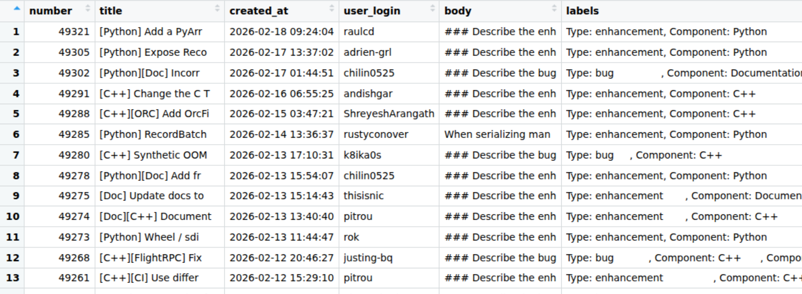

library(dplyr)
target_labels <- c("Component: C++", "Component: R", "Component: Python")
issues_with_components <- data |>
select(number, title, body, labels) |>
# make sure we match our target label
filter(purrr::map_lgl(labels, ~ any(.x %in% target_labels))) |>
# make sure we have code in the PR body
filter(stringr::str_detect(body, "```")) |>
# create new column containing only component labels
mutate(component = purrr::map(labels, ~ .x[.x %in% target_labels])) |>
# filter to only keep rows where we have a single component
filter(purrr::map_int(component, length) == 1) |>
# convert from list to character column
mutate(component = purrr::map_chr(component, 1)) |>
# Remove "Component prefix"
mutate(component = stringr::str_remove(component, "Component: ")) |>
# Remove the bit in the body where the "component" has been auto-appended
mutate(body = stringr::str_remove(body, "### Component\\(s\\).*$"))In this post, I demonstrate how simple LLM tools can be used for open source issue triage.
Background
The Apache Arrow repository contains multiple implementations of Arrow. Both Python and R implementations are wrappers around the C++ implementation. Although many developers work across multiple languages, triage of new issues tends to be done by individuals more aligned to an individual language.
We use labels in the Apache arrow repository to identify which implementation an issue relates to. Our issue creation workflow does make users select a component (e.g. “Python”, “R”, “C++” etc), but on occasion, new issues are opened by users via a different route with the component label missing.
The problem here is that many maintainers will filter issues by component and so unlabeled issues can end up completely ignored. The problem that I want to solve here is whether we can automatically classify issues by component by passing the text in the issue to an LLM, so that we can potentially automate labelling of new issues so they get responded to appropriately.
Loading the data
The first thing that I need to do is get hold of the data. I wrote a script that retrieves issues from the GitHub API and caches them in Parquet files. Parquet is an excellent format for this because it is efficient for storage in terms of space, and unlike CSV files allows nested columns. This means that when you retrieve data from an API in JSON format there’s potentially less work to do to get it into a good state for storage.
Here’s a quick preview of the dataset.

The important column here for us is the labels column, which is a list column containing 0 or more labels. R, Python, and C++ issues all have labels like “Component: Python”. Although the issue titles have the component at the start of their title and also included in their body, this is automatically added based on the label, so isn’t helpful to our problem.
My plan is to extract a subset of C++/Python/R component tickets, remove the autogenerated “component” label that gets added to the body of the ticket, and see if I can get an LLM to classify the component based on the content of the issue body.
Let’s extract a subset of ~30 of each.
I want to create a smaller data set to test the LLM classification on simply because I don’t have any idea at this point on how long it’ll take or how much it’ll cost. The next step is to create a dataset containing 30 issues from each component.
I’ll store this intermediate version to work with later too.
r_issues <- issues_with_components |>
filter(component == "R")
python_issues <- issues_with_components |>
filter(component == "Python")
cpp_issues <- issues_with_components |>
filter(component == "C++")
issues_dataset <- bind_rows(
r_issues |> slice_head(n = 30),
python_issues |> slice_head(n = 30),
cpp_issues |> slice_head(n = 30)
)
# shuffle the dataset
issues_dataset <- issues_dataset |>
slice_sample(prop = 1)# A tibble: 90 × 5
number title body labels component
<dbl> <chr> <chr> <chr> <chr>
1 49129 "[R] Compilation fails when Parquet support is… "###… <chr> R
2 47801 "[Python][CI] Remove use of CMAKE_POLICY_VERSI… "###… <chr> Python
3 49222 "[Python] data loss converting to Table from p… "###… <chr> Python
4 48265 "[Python][GPU] Numba interop tests broken by N… "###… <chr> Python
5 43336 "[R] stringr binding for `str_starts` fails ba… "###… <chr> R
6 48349 "[Python] Support array indices in pc.list_ele… "###… <chr> Python
7 44306 "[R] please write unregister_scalar_function a… "###… <chr> R
8 47698 "pc.subtract_checked(x, x) with x as pa.array(… "###… <chr> Python
9 48832 "[R] arrow::write_parquet error with zero-leng… "###… <chr> R
10 45314 "[R] arrow R package: multiple replacement dis… "###… <chr> R
# ℹ 80 more rowsLLM classification
Before we properly get started, I’m going to have a look at an individual example.
Let’s have a quick look at the first issue in the data set
issues_dataset |> slice(1)# A tibble: 1 × 5
number title body labels component
<dbl> <chr> <chr> <chr> <chr>
1 49129 [R] Compilation fails when Parquet support is d… "###… <chr> R Ok, so I can see from the title that it’s an R function. I’ll paste it below so you can see it.
Issue 3 body
### Describe the bug, including details regarding any error messages, version, and platform.
When building the R bindings with Parquet support disabled (`ARROW_R_WITH_PARQUET` not defined), compilation fails with errors about undeclared 'parquet' identifiers in arrowExports.cpp.
The issue occurs because Parquet-related code in dataset.cpp and arrowExports.cpp lacks proper preprocessor guards. Specifically:
1. In arrowExports.cpp (line ~1871), the function declaration for `dataset___ParquetFileWriteOptions__update` uses `parquet::WriterProperties` and `parquet::ArrowWriterProperties` types without checking if `ARROW_R_WITH_PARQUET` is defined.
2. In dataset.cpp, Parquet-related includes and function implementations are not guarded by `ARROW_R_WITH_PARQUET` checks.
Compilation error:
```
arrowExports.cpp:1871:131: error: use of undeclared identifier 'parquet'
```
Version: 23.0.0
Platform: Linux
### Component(s)
RAnd now let’s try classifying it. Here I’m going to start a new conversation, and then use structured output so that I can determine the exact response type I get from the LLM. In this case I’m using enumerated values so I can guarantee that we get one of the pre-specified values back and nothing else.
library(ellmer)
chat <- chat_anthropic()Using model = "claude-sonnet-4-5-20250929".type_language <- type_enum(values = c("Python", "C++", "R"), "The language implementation of Arrow that the issue relates to")
chat$chat_structured(issues_dataset$body[1], type = type_language)[1] "R"Great! This was successful so now I’m going to try running it on the rest of the data set. In the above code I just use the default model that ellmer is configured to use, which turned out to be Claude Sonnet 4.5, but actually I want to use the cheapest option to see how well it performs.
Let’s have a look at which Anthropic models are available to us in ellmer.
models_anthropic() id name created_at cached_input input
1 claude-sonnet-4-6 Claude Sonnet 4.6 2026-02-17 NA NA
2 claude-opus-4-6 Claude Opus 4.6 2026-02-04 NA NA
3 claude-opus-4-5-20251101 Claude Opus 4.5 2025-11-24 NA NA
4 claude-haiku-4-5-20251001 Claude Haiku 4.5 2025-10-15 0.10 1.00
5 claude-sonnet-4-5-20250929 Claude Sonnet 4.5 2025-09-29 0.30 3.00
6 claude-opus-4-1-20250805 Claude Opus 4.1 2025-08-05 1.50 15.00
7 claude-opus-4-20250514 Claude Opus 4 2025-05-22 1.50 15.00
8 claude-sonnet-4-20250514 Claude Sonnet 4 2025-05-22 0.30 3.00
9 claude-3-haiku-20240307 Claude Haiku 3 2024-03-07 0.03 0.25
output
1 NA
2 NA
3 NA
4 5.00
5 15.00
6 75.00
7 75.00
8 15.00
9 1.25I’m gonna go for the Haiku model and this time I’m gonna do things a little bit differently to do the classification across the whole data set.
I could try writing a loop of some sort, but it’ll be slow, and so I’m gonna use the function parallel_chat_structured() so that I can start a new conversation for each individual issue classification task, and run them in parallel so it takes less time.
haiku_chat <- chat_anthropic(model = "claude-3-haiku-20240307")
haiku_classified <- parallel_chat_structured(
chat = haiku_chat,
prompts = as.list(issues_dataset$body),
type = type_language
)I was surprised to see a message “waiting 35s for rate limiting” when it ran but after diving deeper into the Claude developer docs I realised that I’d hit the 50 requests per minute limit. Pretty simple to limit in the function call, but not need as waiting wasn’t a problem.
I also wanted to check how much it had cost - $0.04 in total.
token_usage() provider model input output cached_input price
1 Anthropic claude-sonnet-4-5-20250929 3795.0 503 0 $0.02
2 Anthropic claude-3-haiku-20240307 136299.5 2996 0 $0.04Now I’d run it successfully with Haiku, I wanted to check the quality of the results. I’m just going to use a very rough measure of how many were a perfect match.
issues_dataset$llm_component <- haiku_classified
mean(issues_dataset$llm_component == issues_dataset$component, na.rm = TRUE) |> round(2)[1] 0.97OK, so this is great; 97% accuracy!
And how about the ones it got wrong? Let’s take a look!
issues_dataset |>
filter(llm_component != component)# A tibble: 3 × 6
number title body labels component llm_component
<dbl> <chr> <chr> <chr> <chr> <fct>
1 47902 [C++][Acero] Add support for `Str… "###… <chr> C++ Python
2 48761 [C++] Substrait serialised expres… "###… <chr> C++ Python
3 49214 [C++][Compute] Allow reusing hash… "###… <chr> C++ Python OK, so 3 C++ tickets incorrectly classified as Python. Let’s have a look at each issue body.
Issue 1 body
### Describe the enhancement requested
Similarly to #43716, it would be useful to support fields with struct types in joins.
Here is similar pyarrow code to that shared by Anja in the other issue to illustrate this case:
```
import pyarrow as pa
import pyarrow.acero as acero
# ---
table_1 = pa.table({"a": [1, 2, 3], "b": ["x", "y", "z"]})
table_1_node = acero.Declaration(
"table_source", options=acero.TableSourceNodeOptions(table_1)
)
table_2 = pa.table(
{"a": [1, 2, 3], "c": [{"x": 1, "y": 2}, {"x": 2, "y": 2}, {"x": 3, "y": 2}]}
)
table_2_node = acero.Declaration(
"table_source", options=acero.TableSourceNodeOptions(table_2)
)
expected = pa.table(
{
"a": [1, 2, 3],
"b": ["x", "y", "z"],
"c": [{"x": 1, "y": 2}, {"x": 2, "y": 2}, {"x": 3, "y": 2}],
}
)
# ---
hash_join_options = acero.HashJoinNodeOptions(
"left outer", left_keys=["a"], right_keys=["a"]
)
join_node = acero.Declaration(
"hashjoin", options=hash_join_options, inputs=[table_1_node, table_2_node]
)
result = join_node.to_table()
assert result == expected
```
When run, the join operation raises the following error:
```
result = join_node.to_table()
File "pyarrow/_acero.pyx", line 592, in pyarrow._acero.Declaration.to_table
File "pyarrow/error.pxi", line 155, in pyarrow.lib.pyarrow_internal_check_status
File "pyarrow/error.pxi", line 92, in pyarrow.lib.check_status
pyarrow.lib.ArrowInvalid: Data type struct<x: int64, y: int64> is not supported in join non-key field c
```
I _think_ addressing this may depend on #45001, but I am not positive
### Component(s)
C++Ok, so here the issue is the fact that the problem was detected in the Python library, which wraps the C++ library. The user who opened this ticket had a sophisticated enough level of knowledge to understand that link, and so rather than classifying this as an incorrect response, I’d actually probably call this example not typical of where we actually want to apply the model and so just not a good example for our test data set. Most unlabelled tickets come from new users who don’t have a deep understanding of the interplay between the different components. Let’s take a look at another example.
Issue 2 body
### Describe the bug, including details regarding any error messages, version, and platform.
When serialising pyarrow expressions using substrait, the size of the serialised buffer increases exponentially with the number of binary operation clauses in the expression due to extension URIs being repeated again for each nested expression.
Testing with pyarrow 21.0.0:
```
================================================================================
Testing with 1 OR condition(s)
================================================================================
Expression: (int_col == 1)
Substrait size: 201 bytes
Total extension URIs: 1
================================================================================
Testing with 2 OR condition(s)
================================================================================
Expression: ((int_col == 1) or (int_col == 2))
Substrait size: 634 bytes
Total extension URIs: 5
================================================================================
Testing with 4 OR condition(s)
================================================================================
Expression: ((((int_col == 1) or (int_col == 2)) or (int_col == 3)) or (int_col == 4))
Substrait size: 2967 bytes
Total extension URIs: 29
================================================================================
Testing with 6 OR condition(s)
================================================================================
Expression: ((((((int_col == 1) or (int_col == 2)) or (int_col == 3)) or (int_col == 4)) or (int_col == 5)) or (int_col == 6))
Substrait size: 12017 bytes
Total extension URIs: 125
================================================================================
Testing with 8 OR condition(s)
================================================================================
Expression: ((((((((int_col == 1) or (int_col == 2)) or (int_col == 3)) or (int_col == 4)) or (int_col == 5)) or (int_col == 6)) or (int_col == 7)) or (int_col == 8))
Substrait size: 48306 bytes
Total extension URIs: 509
================================================================================
Testing with 10 OR condition(s)
================================================================================
Expression: ((((((((((int_col == 1) or (int_col == 2)) or (int_col == 3)) or (int_col == 4)) or (int_col == 5)) or (int_col == 6)) or (int_col == 7)) or (int_col == 8)) or (int_col == 9)) or (int_col == 10))
Substrait size: 193172 bytes
Total extension URIs: 2045
================================================================================
Testing with 12 OR condition(s)
================================================================================
Expression: ((((((((((((int_col == 1) or (int_col == 2)) or (int_col == 3)) or (int_col == 4)) or (int_col == 5)) or (int_col == 6)) or (int_col == 7)) or (int_col == 8)) or (int_col == 9)) or (int_col == 10)) or (int_col == 11)) or (int_col == 12))
Substrait size: 772342 bytes
Total extension URIs: 8189
================================================================================
Testing with 14 OR condition(s)
================================================================================
Expression: ((((((((((((((int_col == 1) or (int_col == 2)) or (int_col == 3)) or (int_col == 4)) or (int_col == 5)) or (int_col == 6)) or (int_col == 7)) or (int_col == 8)) or (int_col == 9)) or (int_col == 10)) or (int_col == 11)) or (int_col == 12)) or (int_col == 13)) or (int_col == 14))
Substrait size: 3105111 bytes
Total extension URIs: 32765
================================================================================
Summary:
================================================================================
OR Conditions | Size (bytes) | Size (KB) | Extension URIs
----------------------------------------------------------------------
1 | 201 | 0.20 | 1
2 | 634 | 0.62 | 5
4 | 2,967 | 2.90 | 29
6 | 12,017 | 11.74 | 125
8 | 48,306 | 47.17 | 509
10 | 193,172 | 188.64 | 2045
12 | 772,342 | 754.24 | 8189
14 | 3,105,111 | 3032.33 | 32765
```
Serialization was done by simply: `buf = pyarrow.substrait.serialize_expressions([expr], ["result"], schema)`
Unfortunately, it might not be possible to just use `is_in` in the expression for my use-case so that might not be a possible workaround.
Would be nice to know if I am somehow misusing the API which is causing this. Thanks!
cc: @westonpace
### Component(s)
C++Again, a more complex example, identified in PyArrow but relating to C++.
And the third?
Issue 3 body
### Describe the enhancement requested
### Problem
The `is_in` kernel (and other set lookup operations) rebuilds the internal hash table (MemoTable) from `value_set` on **every invocation**, even when `value_set` is identical across calls. There is currently no API to pre-build and reuse the hash table.
This becomes a significant bottleneck when the same `value_set` is used to filter many arrays (e.g., in a streaming/batch processing pipeline).
### Use Case
In Ray Data Checkpointing, we want to use `pc.is_in` to perform an anti-join: filtering out already-processed row IDs from each incoming block of data. The checkpoint ID set (`value_set`) is the same across all blocks, but the hash table is rebuilt for every block.
```python
# value_set is the same across all calls — hash table is rebuilt each time
for block in blocks:
membership = pc.is_in(block["id"], value_set=checkpoint_ids)
filtered = block.filter(pc.invert(membership))
```
With 100M checkpoint IDs and 20 blocks, the hash table construction alone takes **~250s** (extrapolating from #36059 benchmarks), doing identical work 20 times.
### Benchmark
Building on the benchmarks from #36059, the cost of rebuilding becomes clear when multiplied across calls:
```python
import pyarrow as pa
import pyarrow.compute as pc
import numpy as np
value_set = pa.array(np.arange(10_000_000))
blocks = [pa.array(np.random.choice(np.arange(1000), 100)) for _ in range(20)]
# Current: ~25s total (rebuilds hash table 20 times)
for block in blocks:
pc.is_in(block, value_set)
# Ideal: ~1.3s (build once, probe 20 times)
```
### Proposed API
**Option A — Prepared/materialized value set object:**
```python
# Build hash table once
lookup = pc.SetLookup(value_set) # or pc.prepare_set(value_set)
# Reuse across calls — probes only, no rebuild
for block in blocks:
mask = lookup.is_in(block)
```
**Option B — Caching in SetLookupOptions:**
```python
options = pc.SetLookupOptions(value_set, cache=True)
# First call builds hash table; subsequent calls reuse it
for block in blocks:
mask = pc.is_in(block, options=options)
```
**Option C — Lower-level hash set exposure:**
```python
hash_set = pc.HashSet(value_set) # builds MemoTable
for block in blocks:
mask = hash_set.is_in(block)
# or: mask = pc.is_in(block, options=pc.SetLookupOptions(hash_set))
```
### Impact
This would benefit any workload that probes the same set repeatedly:
- Streaming anti-joins / semi-joins
- Incremental processing (checkpoint filtering)
- Repeated dictionary lookups
- Any ETL pipeline filtering against a static blocklist/allowlist
### Related
- #36059 — Performance of building up HashTable (MemoTable) in `is_in` kernel (addressed MemoTable speed, but not reuse)
### Component(s)
C++Same again!
Given that these kinds of issues are typically reported by more experienced contributors and don’t end up going unlabelled anyway, we could justifiably deem them to be poor examples for the task at hand and so claim 100% accuracy here.
I’m calling this experiment a success and my next steps are to see if I can deploy this or something similar to help with other aspects of Apache Arrow maintenance. The main thing I took from this is how accessible LLM-powered tooling has become and how simple it has been to use for an otherwise manual task.